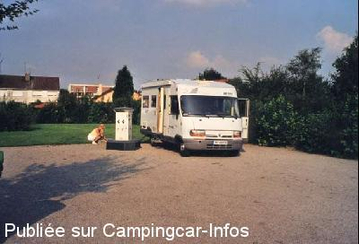
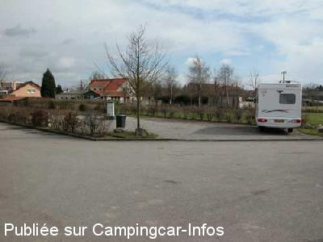

AC = Camping acceptant les camping-cars de :
ARQUES
(N° 187)
Accès/adresse :
29 A rue Michelet
Camping Beauséjour ****
Les 3 Étangs
62510 ARQUES
Camping Beauséjour ****
Les 3 Étangs
62510 ARQUES
Latitude : (Nord) 50.7454° Décimaux ou 50° 44′ 43′′
Longitude : (Est) 2.30462° Décimaux ou 2° 18′ 16′′
Tarif : 2014
Stop accueil, 2 personnes : 14 €
Personne en + : 1 €
Emplacement : 5,20 à 6 €
Personne + 7 ans : 3,50 à 4,30 €
Enfant 2 à 7 ans : 1,70 à 2 €
Électricité 10A : 3,15 €
Taxe de séjour : 0,20 €
Lave-linge : 3,60 €
Sèche-linge : 3,50 €
Services C-C de passage : 2,50 €
Type de borne : RACLET
Services :


Autres informations :
Ouvert d'avril à fin octobre
148 emplacements
Tel : +33(0)321 885 366
http://www.ville-arques.fr/camping_contact.htm
camping-arques@wanadoo.fr

Le 21/02/2007 par Kris

Le 21/02/2007 par Kris
de
Claude
le 04/08/2014 :
Déçu, nous sommes passé le 23/07/2014 en cc pour 3 personnes = 25.75 €. Douche avec jeton à acheter à l'accueil. je me suis fais suer à remplir mon réservoir d'eau avec mon bidon (on ne nous avait pas dit que nous avions droit au jeton gratuit pour remplir à la borne).
Sinon emplacement correct.
Déçu, nous sommes passé le 23/07/2014 en cc pour 3 personnes = 25.75 €. Douche avec jeton à acheter à l'accueil. je me suis fais suer à remplir mon réservoir d'eau avec mon bidon (on ne nous avait pas dit que nous avions droit au jeton gratuit pour remplir à la borne).
Sinon emplacement correct.
de
beauget j p
le 09/05/2014 :
§
15, 75 € le 13 Avril 2014 pour le CC + 2 personnes + electricité
Au camping.
Promenade agréable autour de l'étang.
§
15, 75 € le 13 Avril 2014 pour le CC + 2 personnes + electricité
Au camping.
Promenade agréable autour de l'étang.
de
Maryline Lucas
le 12/05/2013 :
L'air est très bien située, mais nous avons opté pour le camping, très accueillant et très propre.
cc 2 pers + elec 10 amp 15€
Merci à la commune
L'air est très bien située, mais nous avons opté pour le camping, très accueillant et très propre.
cc 2 pers + elec 10 amp 15€
Merci à la commune
de
J Whalley
le 13/08/2012 :
We have stayed here on various occasions and always enjoy the peace and quiet.
It is handy for Calais
J.
We have stayed here on various occasions and always enjoy the peace and quiet.
It is handy for Calais
J.
de
Rob
le 07/08/2011 :
Passer par l'accueil du camping pour obtenir votre ticket.
Borne relais junior bien située à l'entrée du camping pour deux CC, même de grandes dimensions tarif : 2,5€ par jeton à obtenir à l'accueil.
Endroit très calme et boisé, sécurisé par barrière fermée de 20h00 à 07h00 et vraiment à recommander.
« Verger des Maraudes » situé juste à côté où libre-service de pommes variées(en saison).
Une ligne SNCF passe derrière le site mais très peu de trains car voie unique peu fréquentée et aucun train n'y circule la nuit.
Boulangerie à ~ 15 minutes à pieds de l'aire, suivre le sentier qui longe la voie ferrée près de l'usine à céréales et elle se trouve en fin de piste près du passage à niveau.
Centre-ville à ~ 20 minutes à pieds où commerces.
Aire à recommander pour visite de la « Coupole » et du blockhaus d'Eperlecques et bien entendu le Cristal d'Arques. Et aussi bien entendu pour les mordus de la pêche.
Passer par l'accueil du camping pour obtenir votre ticket.
Borne relais junior bien située à l'entrée du camping pour deux CC, même de grandes dimensions tarif : 2,5€ par jeton à obtenir à l'accueil.
Endroit très calme et boisé, sécurisé par barrière fermée de 20h00 à 07h00 et vraiment à recommander.
« Verger des Maraudes » situé juste à côté où libre-service de pommes variées(en saison).
Une ligne SNCF passe derrière le site mais très peu de trains car voie unique peu fréquentée et aucun train n'y circule la nuit.
Boulangerie à ~ 15 minutes à pieds de l'aire, suivre le sentier qui longe la voie ferrée près de l'usine à céréales et elle se trouve en fin de piste près du passage à niveau.
Centre-ville à ~ 20 minutes à pieds où commerces.
Aire à recommander pour visite de la « Coupole » et du blockhaus d'Eperlecques et bien entendu le Cristal d'Arques. Et aussi bien entendu pour les mordus de la pêche.
de
vandenbulcke
le 08/04/2009 :
passé le 6/04/2009 l'usine est une centrale à beton
le bruit n'est pas nuisant ni les trains rare la nuit
pour 2 euros vous pouvait pecher dans 3 petits etangs
cachés derriere les broussailles voir au camping
passé le 6/04/2009 l'usine est une centrale à beton
le bruit n'est pas nuisant ni les trains rare la nuit
pour 2 euros vous pouvait pecher dans 3 petits etangs
cachés derriere les broussailles voir au camping
de
Vanderstraeten Kris
le 21/02/2007 :
Goed voor een paar luie dagen direct aan het meer.Leuk wandelen(net bij park en afgezonderd van de camping)Jammer dat het sluit in de winter(verleden weekend voor gesl.barrel gestaan 17é Febr.).Overkant van het water volgen en u komt aan de spoorweg waar de bakker zich bevind.
Goed voor een paar luie dagen direct aan het meer.Leuk wandelen(net bij park en afgezonderd van de camping)Jammer dat het sluit in de winter(verleden weekend voor gesl.barrel gestaan 17é Febr.).Overkant van het water volgen en u komt aan de spoorweg waar de bakker zich bevind.
de
R. LEROUX
le 03/09/2006 :
8 CC stationnaient le 30-08-06 sur le parking près des étangs, 6 le lendemain. l'endroit est accueillant bien empierré, plat, assez désert quand même la nuit (200m du camping). Si seul CC possibilité de stationner près de l'entrée du camping ou autour de l'aire de service. L'accès se fait par un chemin, (difficile de se croiser). Belle promenade autour des 3 étangs par la barrière verte.Passage du gardien du camping le soir vers 19h. pour ramasser les 2€. Leger bruit d'une usine pas très loin la nuit.
8 CC stationnaient le 30-08-06 sur le parking près des étangs, 6 le lendemain. l'endroit est accueillant bien empierré, plat, assez désert quand même la nuit (200m du camping). Si seul CC possibilité de stationner près de l'entrée du camping ou autour de l'aire de service. L'accès se fait par un chemin, (difficile de se croiser). Belle promenade autour des 3 étangs par la barrière verte.Passage du gardien du camping le soir vers 19h. pour ramasser les 2€. Leger bruit d'une usine pas très loin la nuit.
de
christi@n 59
le 20/03/2004 :
La grille n'est plus dans la pelouse, il y a eu agrandissement de l'aire autour de la borne, nouvelle plateforme pour EU. Tout est ok mais pas d'eau en hiver.
Borne Euro-Relais Junior sur parking de quelques places seulement située à l'extérieur du camping ***.
Endroit tranquille, idéal pour la nuit, à 50 m des Etangs Arc en ciel.
Jetons pour 10 mn d'eau ou 60 mn de 220V.
Depuis Arques, prendre la route de Clairmarais (D210)vers le campings et les étangs.
La grille n'est plus dans la pelouse, il y a eu agrandissement de l'aire autour de la borne, nouvelle plateforme pour EU. Tout est ok mais pas d'eau en hiver.
Borne Euro-Relais Junior sur parking de quelques places seulement située à l'extérieur du camping ***.
Endroit tranquille, idéal pour la nuit, à 50 m des Etangs Arc en ciel.
Jetons pour 10 mn d'eau ou 60 mn de 220V.
Depuis Arques, prendre la route de Clairmarais (D210)vers le campings et les étangs.